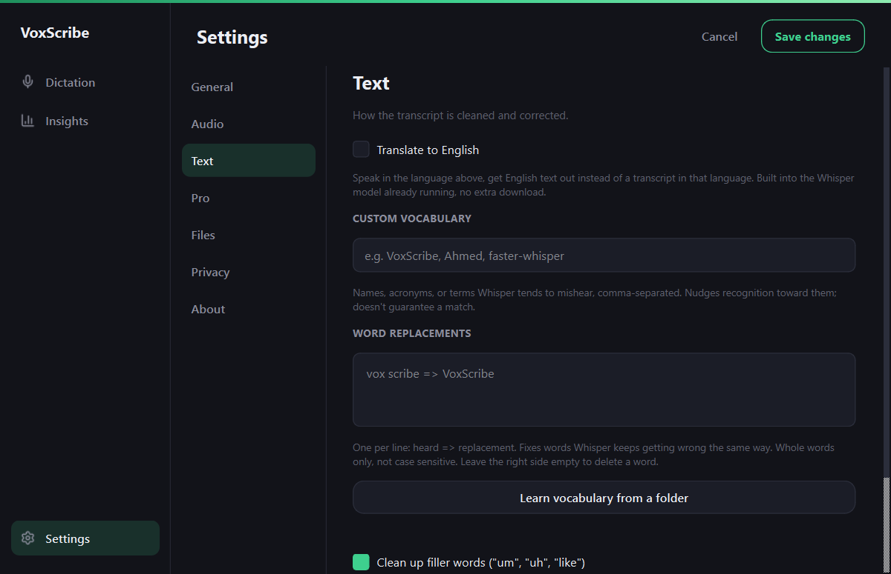

Most voice-to-text apps for Windows are subscription products that stream your audio to a cloud server. Here's what to actually check before you install one, and a free, open-source option that skips the cloud entirely.
Free & open source (MIT) · Windows 10/11 · no account required
A lot of apps marketed as free dictation tools are really free trials, or free tiers capped by word count or minutes per month, with the real product gated behind a monthly subscription. Before installing one, it's worth checking three things:
Cloud dictation tools send a recording of your voice to a remote server every time you use them. That's not inherently unsafe, but it does mean your voice data leaves your device, and the app stops working entirely if you lose your internet connection or the vendor's servers have an outage.
VoxScribe takes a different approach: it runs faster-whisper, an efficient implementation of OpenAI's Whisper speech-recognition model, directly on your own CPU. No account, no API key, no per-minute cost. The only thing that touches the network is a one-time model download on first launch.
| VoxScribe | Typical subscription dictation tools | |
|---|---|---|
| Cost | Free, forever | Monthly subscription |
| Where transcription runs | Locally, on your CPU | Uploaded to a cloud server |
| Works with no internet | Yes, after first launch | No, requires a live connection |
| Usage limits | None | Often capped by plan tier |
| Source code | Public, MIT licensed | Closed source |
Hold a hotkey (F9 by default) anywhere on Windows, talk, and release. The audio is transcribed on your machine and typed directly into whatever field has focus, whether that's a browser tab, a chat app, an IDE, or a document editor. There's no clipboard step, so whatever you had copied stays untouched.
Names and jargon are the usual misses, so there is a vocabulary list and a word replacements box in Settings for anything the model keeps getting wrong.

Yes. VoxScribe is free and open source (MIT license), with no subscription, paid tier, or account requirement for its core dictation feature. It transcribes speech locally using faster-whisper rather than a paid cloud API.
It depends on the app. Most subscription dictation tools upload your audio to a cloud API for processing. VoxScribe transcribes entirely on your own CPU using a local Whisper model, so your voice audio never leaves your device.
VoxScribe types directly into whatever window has focus, using simulated keystrokes rather than a clipboard paste, so it works in any app that accepts normal typed input: browsers, chat apps, code editors, and document editors alike.
Related guides: Dictate Into Any App Guide, Offline Alternative to Windows Voice Typing, Offline Whisper Dictation for Windows, Arabic Voice Typing for Windows, Free .srt Subtitle Generator, Dictate AI Prompts, Voice Typing for Wrist Pain, Android Voice Typing, Android Voice Typing Without the Cloud, Privacy at a Glance, Windows Security Warning Explained.
Home · Android · GitHub · Privacy · This site uses Google Analytics, see the privacy policy.